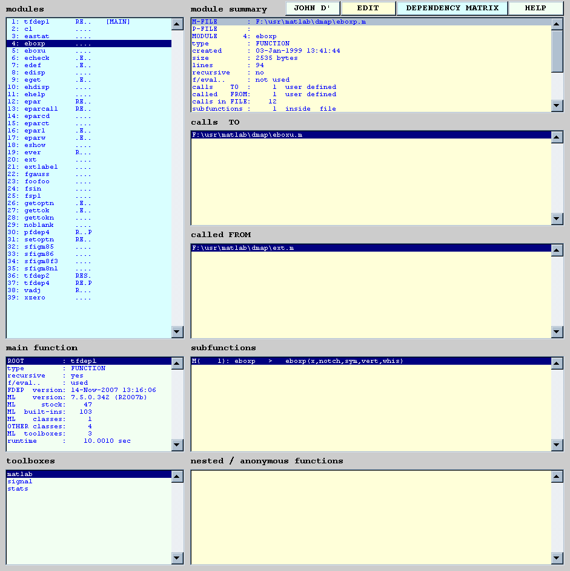
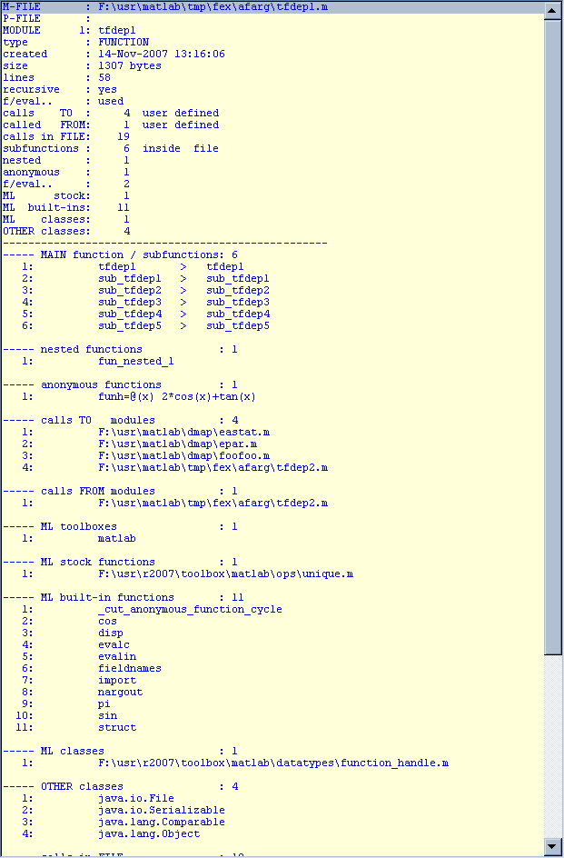
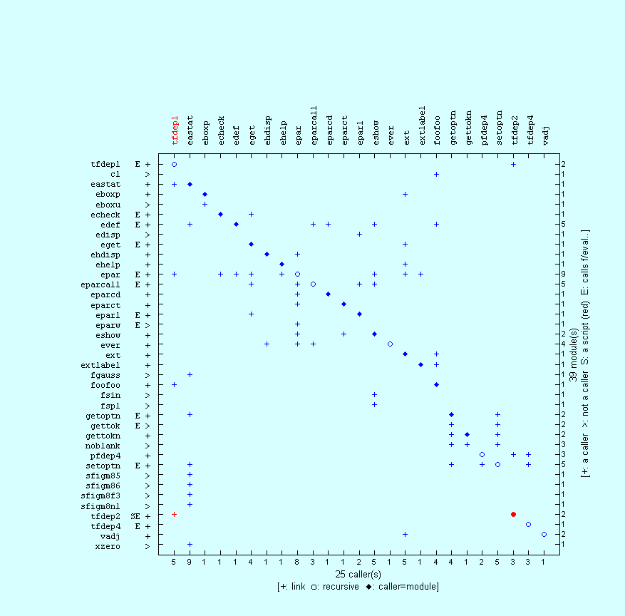
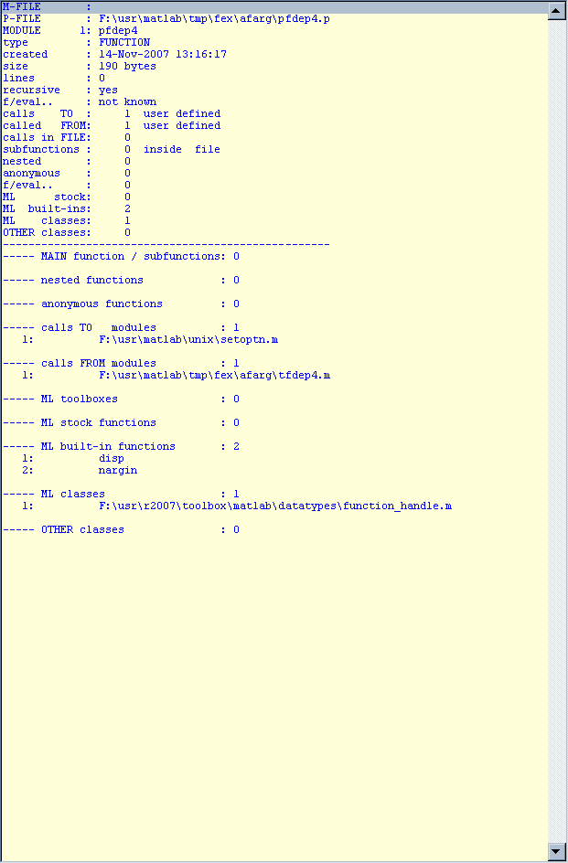
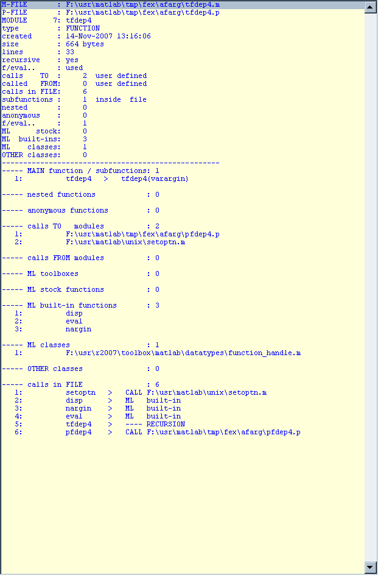
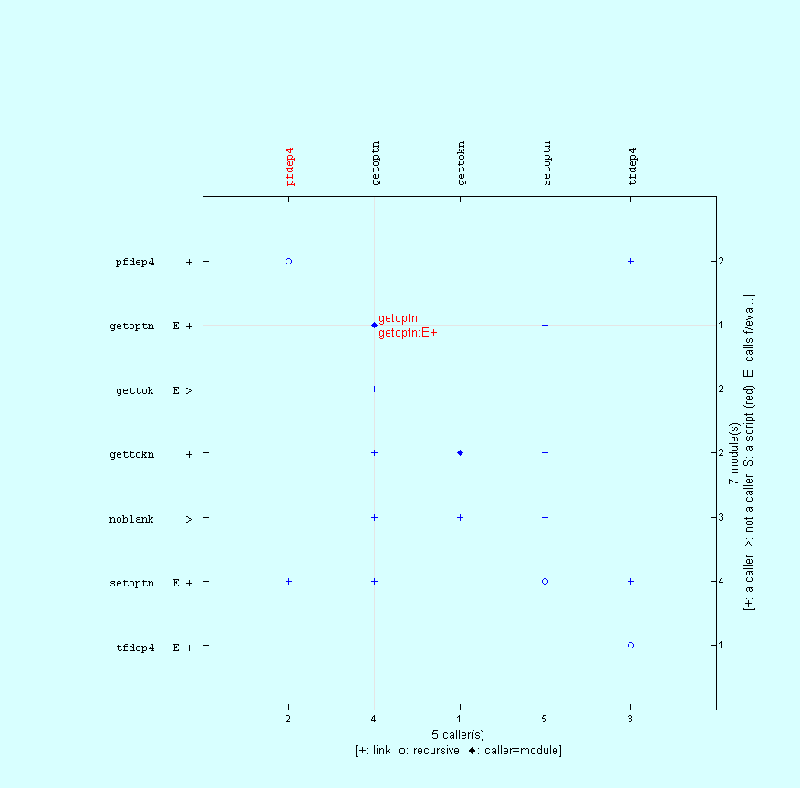
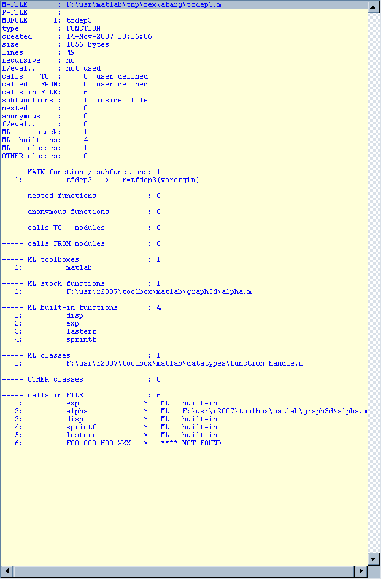
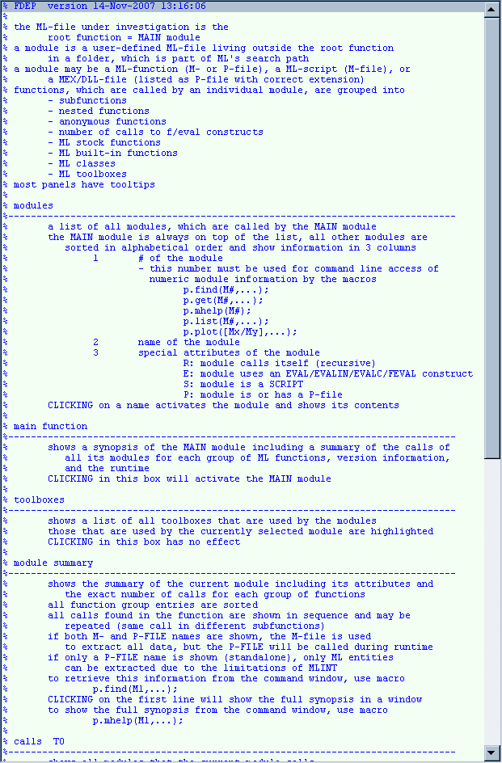

Contents
introduction
TFDEP1: dissection of an M-file
- prepare the environment
delete *fdep4.p;
pcode tfdep4;
copyfile tfdep4.p pfdep4.p;
clear fdep d m p pp s;
- the runtime output
p=fdep('tfdep1','-q');
disp(p.rtree);
1 1 : | tfdep1 RE 1: F:\usr\matlab\dmap\eastat.m
2 2 : | eastat 1: F:\usr\matlab\dmap\edef.m
3 3 : | edef E 1: F:\usr\matlab\dmap\epar.m
4 4 : | epar RE 1: F:\usr\matlab\dmap\ehdisp.m
5 5 : | ehdisp 1: F:\usr\matlab\dmap\ever.m
6 6 : . | ever R 0:
7 5 : . | eparcall RE 2: 3 6
8 5 : . | eparcd 1: 3
9 5 : | eparct 1: F:\usr\matlab\dmap\eshow.m
10 6 : | eshow 1: F:\usr\matlab\dmap\fsin.m
11 7 : . | fsin 0:
12 7 : . | fspl 0:
13 5 : . | eparw E 0:
14 3 : . | sfigm85 0:
15 3 : . | sfigm86 0:
16 3 : . | sfigm8f3 0:
17 3 : . | sfigm8n1 0:
18 3 : . | fgauss 0:
19 3 : . | xzero 0:
20 3 : | getoptn E 1: F:\usr\matlab\local\gettokn.m
21 4 : | gettokn 1: F:\usr\matlab\local\noblank.m
22 5 : . | noblank 0:
23 4 : . | gettok E 0:
24 4 : . | setoptn RE 4: 20 21 22 23
25 2 : | foofoo 1: F:\usr\matlab\dmap\ext.m
26 3 : | ext 1: F:\usr\matlab\dmap\eboxp.m
27 4 : | eboxp 1: F:\usr\matlab\dmap\eboxu.m
28 5 : . | eboxu 0:
29 4 : | eget E 1: F:\usr\matlab\dmap\echeck.m
30 5 : . | echeck E 1: 4
31 5 : | eparl E 1: F:\usr\matlab\dmap\edisp.m
32 6 : . | edisp 0:
33 4 : . | ehelp 1: 4
34 4 : . | vadj R 0:
35 3 : . | extlabel 1: 4
36 3 : . | cl 0:
37 2 : | tfdep2 RES 1: F:\usr\matlab\tmp\fex\afarg\pfdep4.p
38 3 : | pfdep4 R P 1: F:\usr\matlab\tmp\fex\afarg\tfdep4.p
39 4 : . | tfdep4 RE P 2: 24 38
- the listing's panels
p.list(4);

- the contents of selected modules
p.mhelp(1);

- the dependency matrix
p.plot([1,4],[5,13]);

PFDEP4: disscetion of a P-file
- the runtime output
pp=fdep('pfdep4.p','-q');
disp(char(pp.rtree));
1 1 : | pfdep4 R P 1: F:\usr\matlab\tmp\fex\afarg\tfdep4.p
2 2 : | tfdep4 RE P 1: F:\usr\matlab\unix\setoptn.m
3 3 : | setoptn RE 1: F:\usr\matlab\local\gettokn.m
4 4 : | gettokn 1: F:\usr\matlab\local\noblank.m
5 5 : . | noblank 0:
6 4 : | getoptn E 1: F:\usr\matlab\unix\gettok.m
7 5 : . | gettok E 0:
- the contents of selected modules
pp.mhelp('pfdep4');

pp.mhelp('tfdep4');

software developers
- find modules and show their summary
p.find('eastat',2);
M-FILE : F:\usr\matlab\dmap\eastat.m
P-FILE :
MODULE 3: eastat
type : FUNCTION
created : 31-Oct-2007 12:12:24
size : 17351 bytes
lines : 733
recursive : no
f/eval.. : not used
calls TO : 9 user defined
called FROM: 1 user defined
calls in FILE: 149
subfunctions : 11 inside file
nested : 1
anonymous : 4
f/eval.. : 0
ML stock: 19
ML built-ins: 29
ML classes: 1
OTHER classes: 0
ML toolboxes: 2
-------------
M-FILE : F:\usr\matlab\local\cl.m
P-FILE :
MODULE 2: cl
type : FUNCTION
created : 30-May-2003 22:02:47
size : 307 bytes
lines : 20
recursive : no
f/eval.. : not used
calls TO : 0 user defined
called FROM: 1 user defined
calls in FILE: 4
subfunctions : 1 inside file
nested : 0
anonymous : 0
f/eval.. : 0
ML stock: 1
ML built-ins: 3
ML classes: 1
OTHER classes: 0
ML toolboxes: 1
- find modules and retrieve their contents
m=p.get('eastat',1);
FDEP> find module #/name: 3 = <F:\usr\matlab\dmap\eastat.m>
FDEP> find module #/name: 1 = <F:\usr\matlab\tmp\fex\afarg\tfdep1.m>
disp(m(1));
magic: 'FDEPmodule'
FDEPver: '14-Nov-2007 13:16:06'
MLver: '7.5.0.342 (R2007b)'
rundate: '14-Nov-2007 13:16:18'
MODULE_DESCRIPTION___________: '------------------------------------'
module: 'eastat'
file: 'F:\usr\matlab\dmap\eastat.m'
parent: 'F:\usr\matlab\tmp\fex\afarg\tfdep1.m'
index: 3
type: 'FUNCTION'
isscript: 0
ispfile: 0
isrecursive: 0
haseval: 0
hascalls: 9
iscalled: 1
MODULE_FUNCTIONS___________: '------------------------------------'
calls: {149x1 cell}
subfunction: {11x1 cell}
nested: {'splot'}
anonymous: {4x1 cell}
callsTO: {9x1 cell}
callsFROM: {[1x36 char]}
ML_FUNCTIONS___________: '------------------------------------'
MLfunction: {19x1 cell}
MLbuiltin: {29x1 cell}
MLclass: {[1x55 char]}
OTHERclass: {0x1 cell}
MLtoolbox: {2x1 cell}
disp(m(1).MLfunction);
'F:\usr\r2007\toolbox\matlab\datafun\corrcoef.m'
'F:\usr\r2007\toolbox\matlab\datafun\hist.m'
'F:\usr\r2007\toolbox\matlab\datafun\mean.m'
'F:\usr\r2007\toolbox\matlab\datafun\median.m'
'F:\usr\r2007\toolbox\matlab\datafun\std.m'
'F:\usr\r2007\toolbox\matlab\funfun\fminsearch.m'
'F:\usr\r2007\toolbox\matlab\funfun\optimset.m'
'F:\usr\r2007\toolbox\matlab\helptools\help.m'
'F:\usr\r2007\toolbox\matlab\polyfun\polyfit.m'
'F:\usr\r2007\toolbox\matlab\polyfun\polyval.m'
'F:\usr\r2007\toolbox\matlab\specgraph\stairs.m'
'F:\usr\r2007\toolbox\stats\finv.m'
'F:\usr\r2007\toolbox\stats\nlinfit.m'
'F:\usr\r2007\toolbox\stats\nlparci.m'
'F:\usr\r2007\toolbox\stats\nlpredci.m'
'F:\usr\r2007\toolbox\stats\norminv.m'
'F:\usr\r2007\toolbox\stats\polyconf.m'
'F:\usr\r2007\toolbox\stats\prctile.m'
'F:\usr\r2007\toolbox\stats\tinv.m'
disp(m(1).MLtoolbox);
'matlab'
'stats'
mn=2;
disp(sprintf('module #%5d: %s',mn,m(mn).module));
disp( 'classes :');
disp(m(mn).OTHERclass);
module # 2: tfdep1
classes :
'java.io.File'
'java.io.Serializable'
'java.lang.Comparable'
'java.lang.Object'
- find modules in the dependency matrix
caller=2;
cfrom=pp.module(pp.mat(:,caller)~=0);
disp(sprintf('caller : %s\ncalling:',pp.caller{caller}));
disp(sprintf(' > %s\n',cfrom{:}));
caller : getoptn
calling:
> gettok
> gettokn
> noblank
> setoptn
pp.plot([2,2]);

- debug a function
dbtype('TFDEP3','17:49');
disp(sprintf('\nMLINT\n'));
mlint -all -cyc tfdep3;
17 function r=tfdep3(varargin)
18
19 % 1) alpha
20 % - is a ML stock function
21 % MLROOT\toolbox\matlab\graph3d\alpha.m
22 % - is NOT initialized in TFDEP3
23 % > will cause an error if used in this context
24 try
25 r(1)=exp(alpha);
26 catch
27 disp('TFDEP3> error using <alpha>');
28 disp(sprintf('%s\n',lasterr));
29 end
30
31 % 2) beta
32 % - is a ML stock function
33 % MLROOT\toolbox\matlab\specfun\beta.m
34 % - is initialized in TFDEP3
35 % > will NOT cause an error
36 beta=1;
37 r(2)=exp(beta);
38
39 % 3) FOO_GOO_HOO_XXX
40 % - is NOT a function (at least in this ML setup!)
41 % - is NOT initialized
42 % > will cause an error
43 try
44 r(3)=exp(FOO_GOO_HOO_XXX);
45 catch
46 disp('TFDEP3> error using <FOO_GOO_HOO_XXX>');
47 disp(sprintf('%s',lasterr));
48 end
49 end
MLINT
L 17 (C 12-17): The McCabe complexity of 'tfdep3' is 3.
tfdep3;
TFDEP3> error using <alpha>
Error using ==> alpha
Too many output arguments.
TFDEP3> error using <FOO_GOO_HOO_XXX>
Undefined function or variable 'FOO_GOO_HOO_XXX'.
s=fdep('tfdep3','-q');
disp(char(s.rtree));
1 1 : | tfdep3 0:
s.mhelp('tfdep3');

- checking the independence of a program for distribution
fdep fdep;
1 1 : | fdep 0:
------------- NO USER-DEFINED DEPENDENCIES FOUND
M-FILE : F:\usr\matlab\tmp\fex\afarg\fdep.m
P-FILE :
MODULE 1: fdep
type : FUNCTION
created : 14-Nov-2007 13:16:06
size : 62222 bytes
lines : 2541
recursive : no
f/eval.. : not used
calls TO : 0 user defined
called FROM: 0 user defined
calls in FILE: 457
subfunctions : 35 inside file
nested : 0
anonymous : 35
f/eval.. : 0
ML stock: 32
ML built-ins: 75
ML classes: 1
OTHER classes: 0
ML toolboxes: 1
-------------
ROOT : fdep
type : FUNCTION
recursive : no
f/eval.. : not used
FDEP version: 14-Nov-2007 13:16:06
ML version: 7.5.0.342 (R2007b)
ML stock: 32
ML built-ins: 75
ML classes: 1
OTHER classes: 0
ML toolboxes: 1
runtime : 4.2030 sec
d=fdep('fdep','-q');
disp(d.ncall);
0
help
- for the listing's panels
p.help();

- for FDEP [version 14-Nov-2007 13:16:06]
help fdep;
FDEP to show a function's dependencies
FDEP dissects a MATLAB (ML) file and iteratively looks for
all user defined functions (modules), which are used
during runtime
FDEP retrieves for each module its
- subfunctions
- nested functions
- anonymous functions
- number of calls to f/eval constructs
and all
- ML stock functions
- ML built-in functions
- ML classes
- ML toolboxes
that it uses
runtime options and returned macros create user-friendly,
comprehensible, and interactive GUIs, which
- list the results in various panels
- plot a full dependency matrix
in essence, FDEP is a wrapper for DEPFUN and MLINT;
however, due to an efficient pruning engine
it is considerably faster
see also: depfun, depdir, ckdepfun, mlint, which
and the accompanying HTML file
SYNTAX
-------------------------------------------------------------------------------
P = FDEP(FNAM);
P = FDEP(FNAM,OPT1,OPT2,...);
INPUT
-------------------------------------------------------------------------------
FNAM : M-file (function or script) or P-file
- only ML entities can be extracted from
standalone P-files, which do NOT have a
corresponding M-file
OPT : description
--------------------------------------------
-q : do NOT show runtime processing
-l : show module list
-m : show dependency matrix
OUTPUT
-------------------------------------------------------------------------------
P a structure, which returns all information from the lex parser;
fields, which are of common interest, are these macros
P.macro() call macro with default args
P.macro(arg,...) call macro with arguments arg1,...
arg description
--------------------------------------------------------
.list () create the GUI that lists the results
M - activate module M
.help () show help for the listing panels in a window
1 - show help in the command window
.plot () create the GUI that shows the dependency matrix
N1,... - show nodes N1,...
numeric input syntax ([M#column/M#row],...)
only valid nodes are shown with guiding lines
.find M1,... show the synopsis of modules M1,...
.get M1,... retrieve all data of modules M1,...
.mhelp M1,... show all data of module M1,... in a window
Mx may be numeric or the name of an existing module
for more help, see the accompanying HTML file
EXAMPLE
-------------------------------------------------------------------------------
p=fdep('myfile');
p.list(); % show module list
p.plot(); % show dependency matrix
p.find(2); % show synopsis of module #2
d=p.get('foo'); % retrieve data of module <foo>